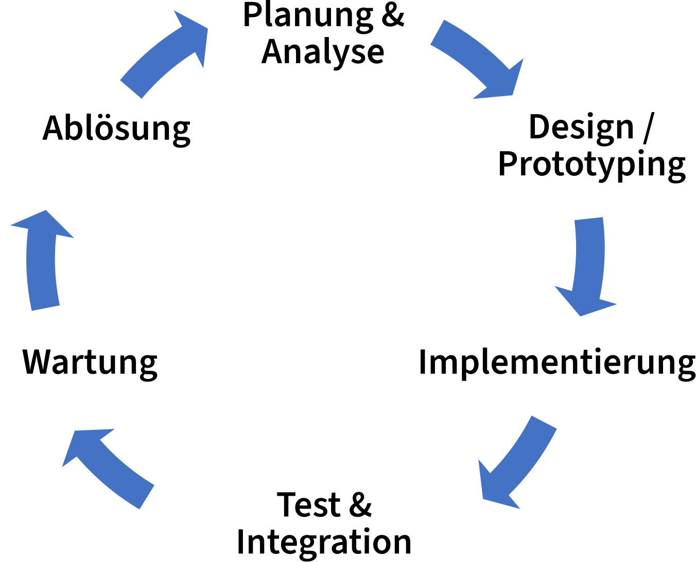

IT-Management
Dieses Kapitel beschreibt die Einführung und den Betrieb von IT-Systemen. Behandelt werden allgemeine Organisation und Kompetenzen über den gesamten Lebenszyklus.
Einleitung
IT-Systeme sind selten statisch sondern folgen einem Lebenszyklus von der Planung bis zu ihrer Ablösung. Während des Betriebs der Systeme müssen mögliche Risiken beachtet und rechtliche Rahmenbedingungen eingehalten werden. In Bibliotheken sind daher entsprechende IT-Kompetenzen und ein organisatorischer Rahmen notwendig. Um diesen Anforderungen begegnen zu können, gibt es Möglichkeiten zur Aus- und Weiterbildung.
Lebenszyklen von IT-Systemen
Alle Software-Systeme folgen einem Lebenszyklus, der mit ihrer Einführung beginnt und irgendwann mit ihrer Abschaltung endet (Abbildung 2.1). Die wesentlichen Phasen im klassischen Lebenszyklus eines IT-Systems werden im Folgenden näher betrachtet.
Die konkrete Abfolge vor allem der ersten Phasen kann je nach der angewendeten Projektmanagement-Methode (agil vs. klassisch) variieren. Eine Diskussion von agilen und klassischen Methoden liegt außerhalb des Fokus dieses Handbuchs.

Planung und Analyse
Grundlage für die Umsetzung eines Softwareprojekts, egal ob es sich um individuell erstellte Software oder die Anpassung eines existierenden IT-Systems handelt, ist ein gemeinsames Verständnis für das Ziel und die Anforderungen des Projektes. Dieses gemeinsame Verständnis, insbesondere der Anforderungen, sollte bei allen Projektmitgliedern und den weiteren Stakeholdern vorhanden sein. Die Anforderungen werden idealerweise vor und während der Entwicklung unter Einbeziehung von Nutzer*innen ermittelt und angepasst.
Zur Planungs- und Analysephase gehört neben einer grundsätzlichen Machbarkeitsanalyse des Projekts die Zusammenstellung eines geeigneten Teams, die Bestimmung der Stakeholder sowie die Klärung finanzieller und rechtlicher Rahmenbedingungen.
Zuweilen kommt es vor, dass die Entscheidung für ein IT-System bereits getroffen ist, bevor geklärt wurde, welches Problem damit gelöst werden soll. Auch in diesem Fall ist es sinnvoll, die Einführung mit einer offenen Planung und Anforderungsanalyse zu beginnen, und danach zu prüfen, welche Anforderungen das System tatsächlich abdecken kann.
Design/Prototyping
Während der Design- bzw. Prototyping-Phase entwickeln Designer*innen und Entwickler*innen erste Prototypen. Ziel ist es dabei, Feedback der verschiedenen Stakeholder zu erhalten, um gemeinsam ein besseres Verständnis der Anforderungen zu erhalten bzw. diese zu präzisieren. Das Kapitel Anforderungen an Bibliotheks-IT geht gesondert auf die Bedeutung dieser Einbeziehung und damit verbundener Methoden ein.
Implementierung
Aufbauend auf einem gemeinsamen Verständnis der Anforderungen überführen Entwickler*innen Prototypen in lauffähigen Code. Wird im Rahmen des Projekts ein bestehendes System implementiert, werden die Prototypen zunächst in ein Testsystem und in der Folge in das produktive System überführt.
In klassischen Projekten sieht man in dieser Phase zuerst ein Produkt mit den gewünschten Features, während nutzer*innenorientierte Vorgehensmodelle (siehe Kapitel Anforderungen) hier auf einen iterativen Prozess setzen, welcher Produktiterationen häufiger bereitstellt und evaluiert.
Test und Integration
Als letzte Lebensphase vor der Produktivschaltung werden Abnahmetests und die Integration des entwickelten bzw. erworbenen Systems in die Zielumgebung durchgeführt. Im Falle der Inanspruchnahme eines Dienstleisters wird hier auch dessen Leistung final abgenommen, wenn das System erfolgreich produktiv in Betrieb genommen werden kann.
Während der Tests wird korrekte Umsetzen der Anforderungen sowie die Umsetzung der Anforderungen geprüft.
Wartung
Die Wartungsphase folgt auf die Produktivsetzung des IT-Systems. In dieser Lebensphase wird das System nicht mehr grundlegend weiterentwickelt, es werden jedoch Fehler (Bugs) entfernt und Anpassungen der Funktionsweise im Sinne der Parametrisierung oder die Optimierung der Programmabläufe vorgenommen.
Typischerweise finden sich IT-Systeme, die grundlegende Geschäftsprozesse abbilden oder die nach individuellen Anforderungen erstellt wurden, viele Jahre in dieser Phase. Abbildung 2.2 illustriert die Lebensspanne einiger ausgewählter Nachweissysteme der Staatsbibliothek zu Berlin, die zum Zeitpunkt der Erstellung dieses Textes erst teilweise abgelöst wurden.
Ablösung
Die Ablösung eines Systems kann eine Vielzahl an Gründen haben. So entwickeln sich die technischen Möglichkeiten und die Anforderungen der Nutzer*innen kontinuierlich weiter. Eine Ablösung kann aber auch durch technische Obsoleszenz erzwungen werden, wenn zugrundeliegende Software-Komponenten wie das Betriebssystem oder ein Datenbankmanagementsystem nicht mehr sicher betrieben werden können.
Die konkrete Ablösungsplanung sollte mit genügend zeitlichem Vorlauf begonnen werden. Dies gewährleistet die Arbeitsfähigkeit in der Ablösungsphase. So können in der Vorphase beispielsweise notwendige Daten migriert werden, die vom Altsystem vorgehalten werden.
Mit dem frühzeitigen Beginn der Ablösungsplanung noch in der Wartungsphase können zudem vermeidbare Risiken minimiert werden. Dies ist insbesondere deshalb wichtig, da man als Betreiber eines IT-Systems nicht alle Faktoren kontrolliert, welche eine kurzfristig notwendig werdende Ablösung des Systems verursachen können. Darunter fallen zum Beispiel:
die Abschaltung wegen technischer Obsoleszenz (s.o.),
der Ausfall des Systems durch Hardware-Ausfälle,
die Ankündigung von Wartungsarbeiten und Sicherheits-Patches durch den Hersteller oder die Insolvenz des Herstellers (insb. bei proprietärer Software) oder
die De-Facto-Unwartbarkeit durch den Wegfall geeigneten Personals mit Spezialkenntnissen (z.B. veralteter Programmiersprachen), siehe dazu auch den Abschnitt Ressourcenplanung
Letztlich führen all diese Punkte zur Abschaltung eines IT-Systems aufgrund von IT-Sicherheitsproblemen, da diese Einbrüche in die Systeme (Hacks) begünstigen. Hinzu kommt das Risiko von Datenverlusten, entweder durch physischen Verlust im Falle eines Hardware-Defekts oder durch den logischen Verlust, da z.B. proprietäre Datenformate nicht mehr gelesen werden können.
Der Weiterbetrieb eines IT-Systems ohne Ablösungsplanung birgt hohe Risiken in sich und kann eine Organisation folglich in ernsthafte Schwierigkeiten bringen, insbesondere wenn geschäftskritische Prozesse betroffen sind.
Betriebsmodelle
Insbesondere serverbasierte Software, wie zum Beispiel das Bibliotheksmanagementsystem, kann auf verschiedene Arten betrieben werden. Die Betriebsarten unterscheiden sich bezüglich Installation, Kosten, Pflege und Wartung sowie Backup und Support.
Lokale Installation
Bis etwa 2010 war diese Betriebsart der Normalfall: Eine Einrichtung erwarb die Lizenz für eine (Server-)Software, entweder als Einzelkauf oder im Abo, und installierte diese auf eigenen Servern, z.B. im Serverraum der Bibliothek. Im Fachjargon spricht man auch von einer „on-premise“ Installation.
In diesem Modell kümmert sich die Einrichtung selbst um Installation und Updates. Folglich erfordert dieses Modell höheren Personaleinsatz und kann dazu führen, dass bei einem personellen Engpass eine Software länger betrieben bzw. nicht aktualisiert wird, als eigentlich ratsam wäre. Auch muss sich die Einrichtung um grundlegende Dinge, wie Backups und Ausfallsicherheit selbst Gedanken machen.
Auf der anderen Seite bietet dieses Modell der Einrichtung die meiste Kontrolle über die eingesetzte Software - etwa hinsichtlich nötiger Erweiterung oder Anpassung - und macht sie damit weitgehend unabhängig von äußeren Einflüssen.
Hosting
In diesem Betriebsmodell wird die Ebene der Rechenkapazität bzw. Serverhardware an einen Dienstleister ausgelagert. Der Dienstleister kann hierbei etwa das Rechenzentrum einer Universität oder des angeschlossenen Bibliotheksverbundes sein, oder ganz allgemein jeder kommerzielle Betreiber eines Rechenzentrums, bei dem Kapazitäten erworben werden.
Sämtliche Betriebsfragen, wie Backups und Ausfallsicherheit der eingesetzten Hardware können an diesen Anbieter delegiert werden. Im Falle des Hostings durch einen Bibliotheksverbund entfallen möglicherweise auch Einrichtung, Installation und Upgrades. Die Betriebskosten müssen beim Verbund kalkuliert werden, was jedoch durch das Hosting für mehrere Einrichtung besser skaliert.
Cloud
Bei diesem Betriebsmodell, das manchmal auch als SaaS (Software as a Service) bezeichnet wird, liegt der fachlich und technische Betrieb beim Anbieter bzw. Dienstleister der Software und die Einrichtung nutzt lediglich eine für sie konfigurierte Installation („Instanz“). Dies ist insbesondere bei webbasierten Anwendungen die bevorzugte Betriebsart, stellt aber erhöhte Anforderungen an die Anbindung lokaler Endgeräte wie z.B. Ausleihautomaten), weil dabei eine sichere und stabile Verbindung zwischen den lokalen Automatisierungsgeräten und dem entfernt gehosteten System hergestellt werden muss.. Die Einrichtung ist weder für die Wartung der eingesetzten Hardware noch für die Pflege der genutzten Software zuständig.
In der Praxis kann sich ein solches Betriebsmodell als komfortabel erweisen, da keine Personalressource für allgemeine Tätigkeiten des IT-Betriebs oder spezielle Bibliotheks-IT-Tätigkeiten benötigt werden. Gerade für kleine Einrichtungen kann dies ein guter Weg sein, möglichst personalsparend serverbasierte Software einzusetzen. Eine Kostenersparnis ist bei einer Vollkostenrechnung aber nicht unbedingt zu erwarten. Je nach Größe der Einrichtung oder basierend auf der Anzahl der Endnutzer*innen führt ein solches Betriebsmodell meist zu Abonnementkosten.
Betriebssicherheit und Risikomanagement
Neben den Problemen der Ablösungplanung gibt es weitere Risiken des Betriebs von IT-Systemen, von denen einige im nachfolgenden Abschnitt vorgestellt werden.
Vendor-Lock-In
Ein nicht zu unterschätzendes Risiko, welches sich aus der Einführung eines proprietären IT-Systems ergibt, ist der sogenannte Vendor Lock-In. Dieser beschreibt die Abhängigkeit von Produkten oder Dienstleistungen eines Anbieters durch die der gleichzeitige Einsatz von anderen Produkten oder der Wechsel zu anderen IT-Systemen erschwert wird. Durch den Einsatz von Systemen mit etablierten Standards, offenen Datenformaten und Schnittstellen sowie geeigneter Ablösungsstrategien kann das Risiko eines Vendor Lock-Ins verringert werden.
Der Begriff des Vendor Lock-ins kann noch auf den Bereich der Fehlerbehebung und die Wartung von Software ausgedehnt werden. Im Fall von proprietärer Software, welche ohne Zugriff auf den Quellcode betrieben wird, ist die Fehlerbehebung ausschließlich Sache des Herstellers. Fällt dieser, wie oben beschrieben, aus, kann ein Betrieb aus IT-Sicherheitsperspektive nicht mehr verantwortet werden. Hinzu kommt, dass das sogenannte Reverse Engineering bzw. das Dekompilieren dieser Software in der Regel verboten ist. Mit einem Grundsatzurteil des EuGH aus dem Jahr 2021 wird dieses Verbot jedoch aufgeweicht. So ist es nun rechtmäßigen Erwerbern erlaubt, Fehler in einem Computerprogramm zu beheben und dafür auch proprietäre Software zu dekompilieren.
In der Praxis sollte dieses Notfallszenario aber nicht in die Planung einbezogen werden, da die Fehlerbehebung innerhalb fremder Software unter dem Rückgriff auf Dekompilierung besondere Kenntnisse seitens des zuständigen IT-Personals voraussetzt.
Software-Abhängigkeiten
Sowohl der Betrieb von proprietärer als auch von Open-Source-Software ist vom Funktionieren einer Vielzahl weiterer Software-Komponenten abhängig. Diese Abhängigkeit lässt sich mit einem vereinfachten Schichtmodells des Betriebs eines IT-Systems illustrieren:
Aus Abbildung 2.3 wird deutlich, dass moderne Software-Systeme zum Beispiel auf einem Betriebssystem oder weiteren Subsystemen wie einem Datenbankmanagementsystem basieren. Um das gesamte IT-System betreiben zu können, müssen die Einzelkomponenten zusammen spielen. Fällt eines der Systeme, beispielsweise das Betriebssystem, aufgrund von Obsoleszenz aus, so ist es unter Umständen möglich, die darüber liegenden Schichten auf ein neues Betriebssystem zu migrieren, jedoch ist dies nicht garantiert.
Das Risiko erhöht sich, wenn im Rahmen eines Wartungsvertrags durch den Hersteller festgelegt wurde, dass zum Beispiel nur bestimmte Kombinationen aus Betriebssystem und weiterer Komponenten zugelassen sind. In diesem Fall kann ein IT-System aus der Wartung fallen, obwohl es vorerst betreibbar bleibt. Mit dem Ausfall der Wartung entfallen auch Software-Updates etc. Damit ist der mittel- bis langfristige Weiterbetrieb des Systems ohne Gefährdung der Betriebssicherheit aller IT-Systeme der Organisation nicht möglich.
Das Kapitel [IT-Entwicklung] widmet sich dem Management von Software-Abhängigkeiten im Detail.
Rechtliche Rahmenbedingungen
Die meisten Bibliotheken befinden sich in öffentlicher Hand und sind deshalb bestimmten Gesetzen und Verordnungen unterworfen. Von besonderer Bedeutung sind dabei Anforderungen an die Software-Ergonomie und die Barrierefreiheit (Accessibility) von IT-Systemen.
Software-Ergonomie
Die gesetzliche Unfallversicherung fordert z.B. die Berücksichtigung ergonomischer Grundsätze bei der Entwicklung von Software. Moderne grafische Anwendungen müssen ebenso wie Internetseiten diese Anforderungen erfüllen:
Die Software muss gebrauchstauglich sein, das heißt, sie sollte gewährleisten, dass Benutzer festgelegte Ziele in einem bestimmten Nutzungskontext effektiv, effizient und zufriedenstellend erreichen können. Dies setzt voraus, dass die Grundsätze der Dialoggestaltung nach DIN EN ISO 9241-110, wie Aufgabenangemessenheit, Selbstbeschreibungsfähigkeit, Steuerbarkeit, Fehlertoleranz, Erwartungskonformität, Individualisierbarkeit, Lernförderlichkeit beachtet und realisiert werden.
Die Erreichung dieser Ziele wird im Kapitel Anforderungen an IT-Entwicklung thematisiert.
Barrierefreiheit
Neben dem Befolgen der Anforderungen an ergonomisch bedienbare Software, liegt es auf der Hand, dass IT-Systeme für eine Vielzahl von Anwender*innen nutzbar sein sollte. Diese grundlegende Anforderung bezeichnet man als Barrierefreiheit bzw. Accessibility.
Während Barrierefreiheit häufig mit einem sehr engen Behinderungsbegriff assoziiert wird, wie z.B. die Rampe für Rollstuhlfahrer*innen, ist dieser Begriff mittlerweile aufgrund der gesetzlichen Grundlagen in Deutschland wesentlich weiter zu fassen (siehe §3 Behindertengleichstellungsgesetz). So leiten sich z.B. auch Anforderungen an Angebote in Leichter Sprache o.ä. aus diesem weiten Behinderungsbegriff ab.
Aufbauend auf der einschlägigen Gesetzgebung regelt die BITV 2.0 (Verordnung zur Schaffung barrierefreier Informationstechnik nach dem Behindertengleichstellungsgesetz) die konkrete Gestaltung barrierefreier IT-Systeme und Webangebot. Hierbei greift sie auf die aktuell gültigen Web Content Accessibilty Guidelines (WCAG) zurück, welche die Anforderungen der Barrierefreiheit anschaulich mit vielfältigen Beispielen illustriert.
Die gesetzliche Anforderung Barrierefreiheit umsetzen zu müssen trifft dabei nicht nur auf Organisationen der öffentlichen Verwaltung, wie es viele Bibliotheken sind, zu. Vielmehr müssen sich alle Stellen, die europäisches Vergaberecht anwenden müssen (siehe EU Richtlinie 2016/2102), z.B. im Rahmen von Drittmitteln oder Zuwendungen, nach diesen Vorgaben richten.
Wichtig ist hierbei zu beachten, dass die BITV 2.0 nicht zwischen internen und externen Nutzer*innen unterscheidet. Das heißt, dass sowohl rein bibliotheksintern genutzte Systeme als auch nach außen gerichtete Anwendungen, wie z.B. Discovery-Systeme, barrierefrei zu gestalten sind.
Neben der Ermöglichung der digitalen Teilhabe für den Großteil der Bevölkerung sollen abschließend noch drei weitere positive Aspekte der Beachtung von Barrierefreiheitsanforderungen genannt werden:
Viele Umsetzungen der Grundsätze der Barrierefreiheit, erhöhen auch die Usability für Menschen ohne Behinderung,
ebenso wird zumeist die Nachnutzbarkeit auf Mobilgeräten erhöht und
die Gestaltung barrierefreier Anwendungen schlägt sich positiv im Suchmaschinenranking nieder, da Suchmaschinen diesen Aspekt zur Bewertung heranziehen.
Management der Bibliotheks-IT
Die Auswahl und Implementierung sowie der Betrieb von digitalen Diensten ist ein stetig wachsender Aufgabenbereich für Bibliotheken. Durch den Verlust ihres früheren Monopols auf die Versorgung mit Informationen ist Ende der 1990er Jahre in den Bibliotheken ein starker Innovationsdruck entstanden. In der Folge wurden neue Dienstleistungen wie fachliche Portale, Dokumentenserver etc. im Rahmen von Projekten realisiert. Die notwendigen Kenntnisse haben vielerorts eigens dafür eingestellte Mitarbeiter*innen eingebracht. Eine systematische Ausweitung von Kenntnissen zu IT-Systemen, Metadatenmanagement, Web-Standards, [Usability und User Experience] bleibt jedoch für die meisten Bibliotheken eine große Herausforderung.
Kompetenzen
Der Einsatz von IT-Systemen erfordert dezidierte Kenntnisse und Fähigkeiten. Veränderungen der Systemlandschaft, z.B. durch einen Systemumstieg oder die Einführung neuer Systeme, erfordern daher eine regelmäßige Analyse der vorhandenen und benötigten IT-bezogenen Kompetenzen.
Bei der Analyse sind folgende Bereiche zu unterscheiden:
Basisinfrastruktur für Hard- und Software: Infrastruktur Netze/Hardware, Netzdienste, Server, Basis-Software, Storage, Backup
Systemadministration: Installation und Betrieb
Inbetriebnahme und Individualisierung: Metadatenmanagement, Konfiguration und Parametrisierung, Software-Entwicklung
Projektmanagement
Für die Systemadministration werden Kenntnisse zu grundsätzlichen Architekturen webbasierter Systeme benötigt. In der Regel handelt es sich dabei um die Installation und Administration von Datenbanken, PHP- und Java-Systemen auf Linux-Servern, einschließlich der jeweiligen Wartung durch Minor und Major Updates, Patches etc.
Für die Inbetriebnahme und Individualisierung von Systemen sind zunächst Kenntnisse bei der Umwandlung von Daten in unterschiedliche Formate notwendig, wenn eine Datenmigrationen aus Altsystemen durchgeführt wird. Die Systeme müssen dann konfiguriert und parametrisiert werden, das heißt auf die konkreten Nutzungsszenarien angepasst. Hier ist zwischen einer so genannten Out-of-the-Box-Verwendung, bei der das System im Rahmen seiner Möglichkeiten genutzt wird, und einer weitergehenden Individualisierung durch eigene Software-Entwicklung zu unterscheiden. In beiden Fällen ist ein Zusammenspiel von bibliotheksfachlichen und Software-technischen Kompetenzen erforderlich, um das Verständnis von bibliothekarischen Geschäftsgängen und den Prozessen und Funktionalitäten des Systems zusammen zu bringen. Daher werden in der Regel Implementierungsteams aus Anwender*innen und Software-Betreuer*innen bzw. Entwickler*innen gebildet
Die Arbeit dieser Implementierungsteams sollte idealerweise nach Grundlagen des Projektmanagements und des Lebenszyklus von IT-Systemen erfolgen, also unter Berücksichtigung klarer Strukturen für die Planung, die Kommunikation und die Kontrolle. Siehe dazu auch das Kapitel [IT-Entwicklung].
Niemand kommt als IT-Expert*in auf die Welt und es ist praktisch unmöglich bei allen Entwicklungen auf dem Laufenden zu bleiben. Versuchen Sie ihre Kompetenzen realistisch einzuschätzen und scheuen Sie sich nicht Kolleg*innen um Rat zu fragen!
Organisation
Größere Bibliotheken haben in der Regel eigene IT-Abteilungen, die folgende Aufgaben übernehmen:
Anwendungsbetreuung bei Hard- und Software sowie Peripheriegeräten,
Betreuung von eigenen Servern,
Konfiguration und Parametrisierung von Systemen,
ggf. Software-Entwicklung.
Alle Punkte außer der Konfiguration und Parametrisierung von Systemen werden in der Regel von informatisch ausgebildetem Personal vorgenommen. Die Konfiguration und Parametrisierung von Systemen ist klassischerweise eine Aufgabe so genannter Systembibliothekar*innen, die teilweise in Ergänzung zu ihrer bibliothekarischen Ausbildung auch über formalisiert erworbene Zusatzqualifikationen verfügen und auf diese Weise eine ideale Schnittstelle zwischen den bibliothekarischen Anwender*innen und den Systemen sind.
Die Betreuung eigener Server wird häufig von übergeordneten Einrichtungen wie universitären, städtischen oder regionalen Rechenzentren oder externen Dienstleistern übernommen. Bei kleinen Bibliotheken werden oftmals auch andere Tätigkeiten von externen Dienstleistern durchgeführt.
Der Umgang mit dem Mangel an IT-Fachkräften wird für die Ressourcenplanung des IT-Managements in Bibliotheken zur Herausforderung werden. Dabei wird auch Open-Source-Software die in der Community entwickelt und unterstützt wird, eine größere Rolle spielen, ebenso wie externe Dienstleister und Software as a Service. Eine umfassende Bedarfsanalyse bei IT-Systemen wird daher zukünftig noch stärker berücksichtigen müssen, wie eine längerfristige Betreuung von eingesetzten Systemen ggf. auch ohne eigenes Personal gewährleistet werden kann.
Ressourcenplanung
Veränderungen des Status Quo durch einen Systemwechsel, neue Funktionalitäten oder auch personelle Änderungen durch neue Mitarbeitende, Berentung o.ä. beeinflussen die Personal- und Ressourcenplanung. Eine kontinuierliche Beschäftigung mit diesem Thema ist notwendig, um das Betriebsrisiko von IT-Systemen zu minimieren. Die Benutzung von gut etablierter und weit verbreiteter freier Software verursacht Kosten durch Kompetenzaufbau oder -einkauf, macht unabhängig in Bezug auf Datenhoheit, Datensicherheit und vor allem die Weiterentwicklung. Die Lizenznahme eines kommerziellen Produktes lässt grundsätzlich weniger Individualisierung zu und verlagert die Verantwortung für die Verfügbarkeit und Betriebssicherheit auf den jeweiligen Anbieter.
Für die Planungen muss entsprechend regelmäßig der Bedarf analysiert werden:
Systeme: Welche Kompetenzen erfordert der Betrieb der Systeme?
Personal: Wie viel Personal steht mit welchen Kompetenzen zur Verfügung?
Wie verteilen sich die Kompetenzen auf das vorhandene Personal?
Wie hoch ist die Übereinstimmung bei vorhandenen und benötigten Kompetenzen?
Sind Weiterbildungen sind erforderlich?
Das Thema Aus- und Weiterbildung sowie die Personalgewinnung wird im Folgenden ausführlicher betrachtet.
Aus- und Weiterbildung
In der Einleitung wird Cody Hanson (2015) zitiert: „Most importantly, all library staff must understand that our software is our library, and is everyone’s responsibility.“ Bezogen auf Einarbeitung und Weiterbildung bedeutet das, dass sich Mitarbeitende mit der (Weiter-)Entwicklung von Software ebenfalls weiterbilden und weiterentwickeln. Nur so kann die Verantwortung von allen Mitarbeitenden mit Bezug zur Bibliotheks-IT gemeinsam getragen werden.
Nachfolgend werden aktuelle Beispiele zur Aus- und Weiterbildungen mit Bezug bibliothekarischen IT-Bereich aufgeführt. Nicht betrachtet werden Szenarien wie die Einarbeitung von Anwender*innen von IT-Systemen bei der Einführung oder dem Wechsel von Systemen.
Ausbildungsmöglichkeiten und Zusatzqualifizierung
Historisch gibt es keine formalisierte Ausbildung für die erwähnten Systembibliothekar*innen. Die notwendigen Kenntnisse werden klassischerweise im Rahmen von „Training on the Job“ erworben.
Allgemeine Ausbildungen und Studiengänge im Bereich IT und Data Science bieten eine gute Grundlage, decken aber bibliotheksspezifische IT-Themen nur unzureichend ab. Stand 2022 gibt es mehrere spezielle Ausbildungsangebote für die Arbeit in der Bibliotheks-IT mit unterschiedlichen Schwerpunkten:
berufsbegleitende Master-Studiengänge:
Vollzeit-Studiengänge:
Kurse
Diese Zusatzqualifizierungsmöglichkeiten sind eine sehr gute Möglichkeit, um vorhandene Mitarbeiter*innen systematisch weiterzuentwickeln und die IT-Kenntnisse in der Bibliothek zu verbreiten. Der Erwerb dieser Abschlüsse ist jedoch zeitaufwändig und passt nur für wenige Lebenssituationen.
Weiterbildung
Bibliothekarische Ausbildungsstätten sowie Verbundzentralen sind wichtige Akteure bei der Weiterbildung von Bibliothekspersonal und machen teilweise entsprechende punktuelle Weiterbildungsangebote. Dabei handelt es sich in der Regel um ein- oder halbtägige Angebote, die durchaus im Einzelnen Hilfestellung bieten. Für Mitarbeitende mit Bezug zur Bibliotheks-IT sollten ausdrücklich zeitliche und ggf. finanzielle Ressourcen für die Nutzung dieser Angebote bereitgestellt werden.
Auch der Besuch von Konferenzen ist eine wichtige Säule der Weiterbildung. Im Kontext der Bibliotheks-IT hervorzuheben sind hier
Jahrestagungen der Verbundzentralen
Bibliothekstage und -konferenzen
Tagung der European Library Automation Group (ELAG)
Code4Lib-Konferenzen in den USA
Access Conference in Kanada
UKSG Annual Conference in Großbritannien
Jahrestreffen der UXLibs in Großbritannien
Die wichtigste Rolle bei der Qualifizierung für die Aufgaben im Bereich Bibliotheks-IT dürfte die informelle Weiterbildung spielen. Informelle Weiterbildungsformen sind
Anwendungstreffen: z.B. jährlich für DSpace, VuFind, Koha, FOLIO, Kitodo, OPUS, …
Library Carpentries
Mailinglisten, Foren und andere Kommunikationskanäle
persönliche Kontakte, Gruppen wie UX Roundtable
Fachpublikationen: Code4Lib Journal, Weave Journal
Soziale Medien: Weblogs, Twitter, Discord
Personalgewinnung
Die Gewinnung von Personal für die Aufgaben im Bereich der digitalen Dienste ist neben der Aus- und Weiterbildung eine zweite Herausforderung. Die Gehaltsstruktur im öffentlichen Dienst ist für informatisch ausgebildetes Personal nicht unbedingt wettbewerbsfähig, so dass viele ausgewiesene IT-Stellen nur schwer besetzt werden können. Eine unmittelbare Reaktion darauf kann sein, die Vorteile der Beschäftigung im öffentlichen Dienst besser herauszuarbeiten (unkommerzielles Umfeld, gesellschaftliche Relevanz der Tätigkeiten).
Dennoch ist es erwartbar, dass Aufgaben im Bereich Bibliotheks-IT künftig stärker an Verbundzentralen oder externe Dienstleister outgesourct werden müssen.
Die Ausrichtung der bibliothekarischen Studiengänge wird die Bedarfe bei den digitalen Diensten noch stärker berücksichtigen und Studierende mit einem erhöhten Interesse an den Aufgaben in der Bibliotheks-IT rekrutieren müssen.
Zusammenfassung und Ausblick
Auch nach Auswahl eines Systems ist eine permanente Beobachtung des Lebenszyklus erforderlich. Es empfiehlt sich immer eine frühzeitige Reaktion auf sich ändernde Anforderungen. Das Wissen um das System als auch um seine Anwendung müssen ebenfalls aktuell gehalten werden, z.B. durch entsprechende Fortbildungen oder Schulungen. Sollte sich ein System-Umstieg abzeichnen, sind vor allem die internen Arbeits-Prozesse zu berücksichtigen: das Wissen der Systemanwendenden und -betreuenden ist somit unverzichtbar, denn nur dadurch kann auf eine Ablösung bzw Anpassung des Systems effektiv reagiert werden.